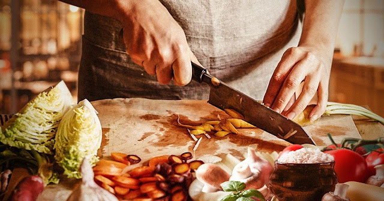
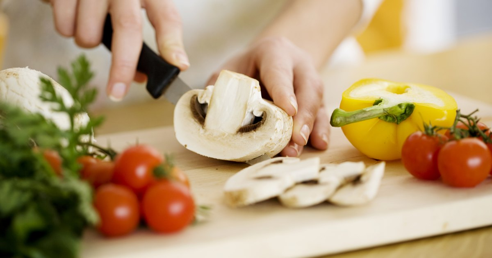

Кулінарія - людська діяльність з приготування їжі, яка включає в себе комплекс технологій, обладнання і рецептів. Ще кулінарію можна поясниту, як сукупність способів приготування з мінералів і продуктів рослинного і тваринного походження різної їжі, необхідної для життя і здоров'я людини. Дотримання певних правил при приготуванні їжі називається технологією. Методи приготування їжі і самі інгредієнти широко варіюють у різних країн, народів, соціальних груп, називаються кухнею і відображають унікальні взаємозв'язки культури, економіки та традицій. Приготування їжі саме по собі сильно залежить і від уміння, і від освіти кухаря. Для приготування смачної і здорової їжі необхідно придбати певні знання з технології та навички з кулінарного мистецтва приготування їжі. Також, кулінарія - магазин (або спеціальний відділ при ресторані, їдальні, кафе, в магазині), який торгує напівфабрикатами і готовими стравами.
  На головну